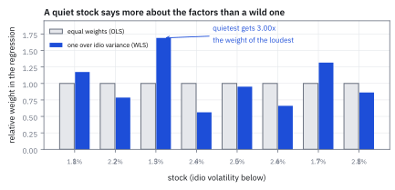
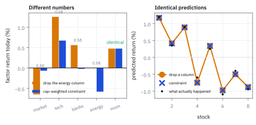

27.1 Cross-Sectional Regression and Rank-Deficient Loadings
ตัวเลขที่บอกว่าวันนี้ตลาดและกลุ่มธุรกิจแต่ละกลุ่มพาหุ้นขึ้นลงเท่าไร (factor return) ไม่มีใครประกาศให้ ทีมต้องคำนวณเองทุกวัน ด้วย regression ที่ใช้หุ้นทุกตัวของวันเดียวกันเป็นข้อมูล ถ้าแบบจำลองมีทั้ง market และ industry สมการจะมีคำตอบที่ดีเท่ากันนับไม่ถ้วน เราจึงต้องเลือกเงื่อนไขเพิ่มเองหนึ่งข้อ
ทุกเช้า ผู้จัดการพอร์ตอยากรู้ว่าเมื่อวานหุ้นในพอร์ตขยับเพราะอะไร คำตอบที่เป็นไปได้มีสามแบบ
- ตลาดทั้งตลาดขึ้นหรือลง
- หุ้นในกลุ่มธุรกิจเดียวกันขยับไปพร้อมกัน
- มีเรื่องเฉพาะของบริษัทนั้นเอง เช่นประกาศกำไร
ทีมความเสี่ยงแยกสามเรื่องนี้ออกจากกันด้วย factor model แบบจำลองนี้มองผลตอบแทนของหุ้น (ราคาเปลี่ยนไปกี่เปอร์เซ็นต์ในวันนั้น) ว่าเป็นผลรวมของสองส่วน ส่วนแรกมาจากแรงร่วมไม่กี่ตัวที่กระทบหุ้นหลายตัวพร้อมกัน เรียกแรงเหล่านี้ว่า factor ส่วนที่สองเป็นเรื่องของหุ้นตัวนั้นเอง ขนาดของแรงร่วมแต่ละตัวในวันหนึ่ง วัดเป็นเปอร์เซ็นต์ เรียกว่า factor return
แบบจำลองในหน้านี้มีหุ้น 8 ตัว (ข้อมูลสมมติ) และมี factor ห้าตัว
- market คือแรงของตลาดทั้งตลาด หุ้นทุกตัวรับแรงนี้เท่ากัน คือมี loading 1 (loading คือตัวคูณที่บอกว่าหุ้นตัวนั้นรับแรงของ factor นั้นมากแค่ไหน เช่น ถ้าวันนี้ market factor return เป็น $+1\%$ หุ้นที่มี loading 1 ได้ $1\times1\%=+1\%$ จากแรงนี้)
- industry สามตัว คือกลุ่มธุรกิจ tech, banks และ energy หุ้นแต่ละตัวอยู่กลุ่มเดียว จึงมี loading 1 ที่กลุ่มของตัวเอง และ 0 ที่อีกสองกลุ่ม
- momentum คือแรงที่ทำให้หุ้นที่ราคาวิ่งขึ้นแรงมาทั้งปียังวิ่งต่อ หุ้นแต่ละตัวมี loading ของ momentum ไม่เท่ากัน
นักพัฒนาคนหนึ่งเอาข้อมูลของวันนี้ คือผลตอบแทนของหุ้น 8 ตัวและ loading ของมัน ส่งเข้าไลบรารี regression (โค้ดสำเร็จรูปที่หาตัวคูณชุดที่ทำให้สมการเข้ากับข้อมูลมากที่สุด) ไลบรารีคืน factor return มาห้าตัวโดยไม่มีคำเตือน เขาจึงรายงานว่า “วันนี้ market −0.03% และ tech +0.64%” (สองตัวเลขนี้ หน้านี้จะคำนวณให้ดูเองในขั้นตัวเลขจากสามทาง)
เชื่อตัวเลขนี้ได้ไหม?
ลองตอบก่อนเปิดเฉลย
ยังเชื่อไม่ได้ ต้นเหตุอยู่ที่ loading ไม่ใช่ที่ไลบรารี ลองเขียน loading เป็นตาราง แถวละหุ้น คอลัมน์ละ factor หุ้นทุกตัวมีเลข 1 ในคอลัมน์ industry แค่ช่องเดียว เช่นหุ้น tech มี tech, banks, energy เป็น 1, 0, 0 ถ้าบวกสามคอลัมน์ industry ของหุ้นตัวนี้ จะได้ $1+0+0=1$ ซึ่งเท่ากับช่อง market ของมันพอดี หุ้นทุกตัวเป็นแบบนี้หมด
ผลคือข้อมูลแยกไม่ออกว่าผลตอบแทนก้อนหนึ่งมาจาก market หรือมาจากทุก industry พร้อมกัน สมการจึงมีคำตอบที่ดีเท่ากันนับไม่ถ้วน และไลบรารีแอบเลือกให้หนึ่งคำตอบโดยไม่บอก
หน้านี้จะคำนวณให้ดูทีละขั้นว่า ถ้าเลือกเงื่อนไขต่างกัน ตัวเลขออกมาเป็นอย่างไร
- ไลบรารีเลือกคำตอบที่ factor return ทั้งห้าตัว เมื่อมองเป็นเวกเตอร์ ยาวน้อยที่สุด ได้ market −0.0324% และ tech +0.6366%
- ลบคอลัมน์ energy ทิ้ง ได้ market −0.6466% และ tech +1.2508%
- บังคับให้ผลตอบแทนของ industry เฉลี่ยแบบถ่วงด้วยขนาดบริษัทเป็นศูนย์ ได้ market −0.0666% และ tech +0.6708%
ทั้งสามชุดทำนายผลตอบแทนของหุ้นทุกตัวได้เท่ากันเป๊ะ และให้ momentum 0.4741% เท่ากัน สามชุดต่างกันแค่การแบ่งเครดิตระหว่าง market กับ industry เราจึงต้องเลือกเงื่อนไขเองอย่างรู้ตัว
ภาพรวมก่อนลงสูตร
ตอนตั้ง สมการ factor model เราเขียน factor return ของวัน $t$ เป็นเวกเตอร์ $\mathbf f_t$ ราวกับว่ามีอยู่ในข้อมูลแล้ว แต่ไม่มีตลาดไหนประกาศตัวเลขนี้ ข้อมูลที่มีจริงมีแค่สองอย่าง
- ผลตอบแทนวันนี้ของหุ้นทุกตัว
- loading ของหุ้นทุกตัว ซึ่งมาจากคุณสมบัติของบริษัทที่รู้ตั้งแต่เมื่อวาน เช่นบริษัทอยู่ industry ไหน และราคาวิ่งแรงมาแค่ไหน
ดังนั้นทีมต้องคำนวณ factor return เองจากสองอย่างนี้ทุกวัน แบบจำลองที่ loading มาจากคุณสมบัติของบริษัทแบบนี้ เรียกว่า fundamental factor model
วิธีคำนวณดูได้จากรูปเดียว (รูปข้างล่าง) เอาหุ้น 8 ตัวของวันนี้มาวางเป็นจุด แกนนอนคือ momentum loading แกนตั้งคือผลตอบแทนวันนี้ แล้วลากเส้นตรงที่เข้ากับจุดได้ดีที่สุด ความชันของเส้นคือ momentum factor return ของวันนี้ เพราะความชันบอกว่า หุ้นที่มี momentum มากกว่าหนึ่งหน่วย ได้ผลตอบแทนมากกว่ากี่เปอร์เซ็นต์
หุ้นแต่ละกลุ่มรับแรงของ industry ตัวเอง เส้นจึงมีสามเส้น สามเส้นขนานกันเพราะใช้ความชันเดียวกัน แต่สูงไม่เท่ากัน ความสูงของแต่ละเส้นคือ market บวก industry ของกลุ่มนั้น
การลากเส้นแบบนี้คือ regression ที่ใช้หุ้นหลายตัวในวันเดียวเป็นข้อมูล คำว่า cross-section แปลว่าภาพตัดขวาง คือดูหุ้นทุกตัว ณ เวลาเดียว จึงเรียกวิธีนี้ว่า cross-sectional regression ทำซ้ำทุกวันก็ได้ factor return วันละชุด เรียงต่อกันเป็นอนุกรมเวลา
รูปนี้ซ่อนปัญหาไว้หนึ่งข้อ ข้อมูลบอกความสูงของเส้นได้สามค่า แต่ความสูงแต่ละค่าเป็นผลรวม market บวก industry ตัวไม่รู้จึงมีสี่ตัว คือ market หนึ่งตัวกับ industry สามตัว สามสมการกับสี่ตัวไม่รู้มีคำตอบนับไม่ถ้วน เช่น เส้น tech สูง 0.60 (ค่านี้หน้านี้จะคำนวณให้ดูในขั้นถัด ๆ ไป) เขียน $f_{\text{mkt}}$ แทน market factor return และ $f_{\text{tech}}$ แทน tech factor return ความสูง 0.60 จะแบ่งเป็นสองตัวนี้แบบไหนก็ได้ ขอให้ผลรวมเท่าเดิม
หน้านี้จะเดินตามลำดับนี้
- เขียนข้อมูลของวันนี้เป็นสมการ แล้วหาคำตอบด้วย WLS (regression ที่ให้หุ้นซึ่งแกว่งน้อยมีน้ำหนักมากกว่า)
- หาทิศที่ข้อมูลมองไม่เห็น และดูว่าอะไรที่ข้อมูลยังกำหนดได้
- เทียบสามทางแก้ด้วยตัวเลขจริง
- ดูว่า factor return แต่ละตัวคือผลตอบแทนของพอร์ตที่ซื้อได้จริง
- วัดว่าตัวเลขที่ได้คลาดได้แค่ไหน
- แก้ปัญหาไก่กับไข่: น้ำหนักของ WLS ต้องใช้ผลลัพธ์ของ regression เอง
รูป — หนึ่งวัน หุ้นแปดตัว: ความชันคือ factor return
ศัพท์ที่ใช้ในหัวข้อนี้
- Factor return
- ขนาดของแรงร่วมหนึ่งตัวในวันหนึ่ง วัดเป็น % ต่อ loading หนึ่งหน่วย เช่น momentum factor return 0.47% แปลว่าหุ้นที่มี momentum loading มากกว่าอีกตัวหนึ่งหน่วย ได้ผลตอบแทนมากกว่า 0.47%
- Loading
- ตัวคูณที่บอกว่าหุ้นตัวหนึ่งรับแรงของ factor หนึ่งมากแค่ไหน ในหน้านี้ loading รู้ล่วงหน้าเสมอ
- Idiosyncratic return
- ส่วนของผลตอบแทนที่ factor อธิบายไม่ได้ เป็นเรื่องของหุ้นตัวนั้นเอง เช่นข่าวของบริษัท ในรูปมันคือระยะจากจุดถึงเส้น
- Cross-sectional regression
- regression ที่ข้อมูลแต่ละแถวคือหุ้นหนึ่งตัวในวันเดียวกัน ใช้หา factor return ของวันนั้นจากผลตอบแทนของหุ้นทุกตัว แล้วทำซ้ำทุกวัน
- Fundamental factor model
- แบบจำลองที่ loading มาจากคุณสมบัติของบริษัท เช่น industry, momentum และขนาด ซึ่งรู้ล่วงหน้า ส่วน factor return ต้องคำนวณจากข้อมูล บริษัทข้อมูลที่ขายแบบจำลองความเสี่ยงใช้แบบนี้ ทีมที่หาหุ้นซึ่งให้ผลตอบแทนเกินกว่าที่ factor อธิบาย (เรียกส่วนเกินนี้ว่า alpha) ก็ใช้แบบนี้
- WLS (weighted least squares)
- วิธีหาคำตอบที่ทำให้ผลรวมของความคลาดกำลังสองน้อยที่สุด โดยให้แต่ละแถวมีน้ำหนักไม่เท่ากัน ใช้เมื่อข้อมูลแต่ละแถวน่าเชื่อถือไม่เท่ากัน OLS คือกรณีที่ทุกแถวมีน้ำหนักเท่ากัน
- Dummy variable
- คอลัมน์ที่มีแค่ 0 กับ 1 บอกว่าหุ้นอยู่กลุ่มนั้นหรือไม่ คอลัมน์ industry ในหน้านี้เป็นแบบนี้
- Rank-deficient
- loadings matrix ที่จำนวนคอลัมน์ที่ให้ข้อมูลใหม่จริง (เรียกว่า rank) น้อยกว่าจำนวนคอลัมน์ทั้งหมด เพราะมีคอลัมน์หนึ่งที่สร้างได้จากการบวกคอลัมน์อื่น ผลคือ regression มีคำตอบที่ดีเท่ากันนับไม่ถ้วน
- Null direction
- ทิศ $\mathbf v$ ที่ทำให้ $\mathbf B\mathbf v=\mathbf 0$ จะบวกทิศนี้เข้าไปในคำตอบกี่เท่าก็ได้ คำทำนายของหุ้นทุกตัวไม่เปลี่ยน ทิศนี้จึงบอกว่าข้อมูล “มองไม่เห็น” อะไร
- Ridge
- regression ที่เพิ่มบทลงโทษให้คำตอบที่ตัวเลขใหญ่ เพื่อให้มีคำตอบเดียว แลกกับค่าที่เอนเข้าหาศูนย์เล็กน้อย
- Pseudo-inverse
- ตัวแทนของ matrix ผกผัน ใช้กับ matrix ที่ผกผันไม่ได้ ในบรรดาคำตอบที่ดีที่สุดทั้งหมด มันเลือกคำตอบที่เวกเตอร์สั้นที่สุด
- Standard error (SE)
- ขนาดความคลาดโดยทั่วไปของค่าประมาณ คือ SD ของค่าประมาณ ถ้าเก็บข้อมูลใหม่ซ้ำหลาย ๆ รอบ
- Exposure
- loading ของทั้งพอร์ต คือผลรวมของน้ำหนักหุ้นแต่ละตัวคูณ loading ของหุ้นตัวนั้น
- Factor-mimicking portfolio (FMP)
- พอร์ตหุ้นที่ผลตอบแทนเท่ากับ factor return ที่คำนวณได้พอดี มี exposure 1 ต่อ factor ของตัวเอง และ 0 ต่อ factor อื่น ใช้ซื้อขาย factor ได้จริง และใช้ตรวจว่าตัวเลขแต่ละตัวหมายถึงอะไร
สัญลักษณ์และหน่วย
| สัญลักษณ์ | ความหมาย | หน่วย |
|---|---|---|
| $\mathbf r$ | ผลตอบแทนของหุ้น $n$ ตัวในวันหนึ่ง หักดอกเบี้ยเงินฝากออกแล้ว (เรียกว่า excess return) | % ต่อวัน |
| $\mathbf B$ | loadings matrix ขนาด $n\times m$ แถวละหุ้นหนึ่งตัว คอลัมน์ละ factor หนึ่งตัว รู้ตั้งแต่สิ้นวันก่อนหน้า | ไม่มีหน่วย |
| $\mathbf f,\ \boldsymbol\epsilon$ | factor return ที่ต้องหา ($m$ ตัว) และ idiosyncratic return ($n$ ตัว) | % ต่อวัน |
| $\sigma_i,\ w_i$ | ความผันผวนเฉพาะตัวของหุ้น $i$ (ขนาดการแกว่งของ $\epsilon_i$) และน้ำหนัก $w_i=1/\sigma_i^2$ | % ต่อวัน, ต่อ %² |
| $\mathbf W$ | matrix แนวทแยงที่มี $w_i$ อยู่บนแนวทแยง | ต่อ %² |
| $\mathbf H$ | matrix ที่แปลงผลตอบแทนหุ้นเป็น factor return ($\hat{\mathbf f}=\mathbf H\mathbf r$) แต่ละแถวคือน้ำหนักของ FMP หนึ่งพอร์ต | ไม่มีหน่วย |
| $\mathbf v,\ s$ | null direction และระยะที่เลื่อนคำตอบไปตามทิศนั้น | ไม่มีหน่วย, % |
| $\mathbf c,\ \delta$ | เวกเตอร์ของเงื่อนไขที่เติม และขนาดบทลงโทษของ ridge | ไม่มีหน่วย, ต่อ %² |
ขั้นที่ 1 — ข้อมูลของวันนี้ และสมการหนึ่งบรรทัดต่อหุ้นหนึ่งตัว
ก่อนจะลากเส้นในรูป ต้องเขียนรูปให้เป็นสมการก่อน ขั้นนี้วางข้อมูลของวันนี้ลงตาราง แล้วเขียนสมการหนึ่งบรรทัดต่อหุ้นหนึ่งตัว
โจทย์ให้อะไรมาบ้าง: หุ้น 8 ตัว แบ่งเป็นสามกลุ่ม ตัวเลขทั้งหมดเป็นข้อมูลสมมติ แต่ละตัวมีข้อมูลสี่อย่าง
- ผลตอบแทนวันนี้ $r$ เป็น %
- momentum loading คือคะแนนที่บอกว่าราคาหุ้นวิ่งแรงแค่ไหนในปีที่ผ่านมา เทียบกับหุ้นตัวอื่น 0 คือกลาง ๆ ค่าบวกคือวิ่งขึ้นแรงกว่าเพื่อน ค่าลบคือแย่กว่าเพื่อน
- ความผันผวนเฉพาะตัว $\sigma$ เป็น % ต่อวัน คือขนาดการแกว่งของ idiosyncratic return ของหุ้นตัวนั้น ประมาณจากข้อมูลถึงเมื่อวาน
- มูลค่าตลาด คือราคาหุ้นคูณจำนวนหุ้นทั้งหมดของบริษัท หรือราคาของทั้งบริษัท เป็นล้านดอลลาร์
| หุ้น | กลุ่ม | $r$ (%) | momentum | $\sigma$ (%) | มูลค่าตลาด (ล้านดอลลาร์) |
|---|---|---|---|---|---|
| 1 | tech | 1.20 | 1.2 | 1.8 | 300 |
| 2 | tech | 0.35 | −0.4 | 2.2 | 180 |
| 3 | tech | 0.90 | 0.6 | 1.5 | 220 |
| 4 | banks | −0.60 | −1.4 | 2.6 | 400 |
| 5 | banks | 0.25 | 0.9 | 2.0 | 150 |
| 6 | energy | −1.10 | −0.7 | 2.4 | 260 |
| 7 | energy | −0.40 | 0.3 | 1.7 | 340 |
| 8 | energy | −0.95 | −0.5 | 2.1 | 190 |
loading ของหุ้นทั้ง 8 ตัวเรียงเป็น matrix $\mathbf B$ แถวละหุ้นหนึ่งตัว ห้าคอลัมน์เรียงเป็น market, tech, banks, energy และ momentum คอลัมน์ market เป็น 1 ทุกแถว คอลัมน์ industry เป็น 1 เฉพาะหุ้นในกลุ่มนั้น (tech คือหุ้น 1–3, banks คือหุ้น 4–5, energy คือหุ้น 6–8) คอลัมน์สุดท้ายคือ momentum จากตาราง
สมการของ factor model บอกว่า ผลตอบแทนของหุ้นแต่ละตัว เท่ากับ loading คูณ factor return รวมกันทุก factor แล้วบวกส่วนเฉพาะตัว $\epsilon$ ของหุ้นตัวนั้น เขียนรวดเดียวทุกหุ้นด้วย matrix ได้เป็น $\mathbf r=\mathbf B\mathbf f+\boldsymbol\epsilon$ โดย $\mathbf f=(f_{\text{mkt}},f_{\text{tech}},f_{\text{banks}},f_{\text{energy}},f_{\text{mom}})$ คือ factor return ห้าตัวที่ต้องหา เปิดออกมาดูสองแถว คือหุ้น 1 (tech, momentum 1.2) กับหุ้น 4 (banks, momentum −1.4)
คำตอบ: หุ้นแต่ละตัวให้สมการหนึ่งบรรทัด รวมแปดบรรทัด ส่วนตัวไม่รู้มี factor return ห้าตัว บวกส่วนเฉพาะตัวอีกแปดตัว รวม $5+8=13$ ตัว ซึ่งมากกว่า 8 สมการ เราจึงไม่ “แก้” สมการให้ลงตัว แต่เลือก $\mathbf f$ ที่ทำให้ส่วนที่อธิบายไม่ได้ $\boldsymbol\epsilon$ เล็กที่สุด นี่คือ regression ธรรมดา หุ้นเป็นแถว loading เป็นคอลัมน์ และ factor return เป็นสัมประสิทธิ์ที่ต้องหา
loading ต้องเป็นข้อมูลที่รู้ ณ สิ้นวันก่อนหน้า ไม่ใช่ของวันนี้ เพราะ loading ควรบอกสิ่งที่รู้ก่อนตลาดเปิด จุดที่พลาดบ่อยคือข้อมูลที่ซื้อจากบริษัทขายข้อมูล หลายรายประทับวันที่ $t$ ให้ข้อมูลที่รู้ตอนสิ้นวัน $t$ ถ้าจับคู่ข้อมูลนี้กับผลตอบแทนของวัน $t$ ตรง ๆ ก็เท่ากับใช้ข้อมูลที่ตอนต้นวันยังไม่มีใครรู้ จึงต้องเลื่อนข้อมูลไปหนึ่งวันเสมอ
ตรวจเองใน 10 วินาที: ดูสามคอลัมน์ industry ใน $\mathbf B$ ทุกแถวมีเลข 1 ช่องเดียว เช่นแถวของหุ้น 4 คือ $0+1+0=1$ ผลรวมสามคอลัมน์จึงเป็น 1 ทุกแถว เท่ากับคอลัมน์ market พอดี ปัญหาที่ขั้น dummy variable trap จะอธิบาย จึงมองเห็นได้ตั้งแต่ก่อนคำนวณอะไรเลย
ขั้นที่ 2 — WLS: หุ้นที่เหวี่ยงน้อยมีเสียงดังกว่า
ขั้นก่อนบอกว่าเราจะเลือก $\mathbf f$ ให้ส่วนที่อธิบายไม่ได้ “เล็กที่สุด” ขั้นนี้ตอบว่าวัดความเล็กอย่างไร ปัญหาคือหุ้นแต่ละตัวมีเสียงรบกวนเฉพาะตัวไม่เท่ากัน เช่นหุ้น 3 มี $\sigma_3=1.5\%$ แต่หุ้น 4 มี $\sigma_4=2.6\%$ ผลตอบแทนของหุ้น 4 จึงปนเรื่องของบริษัทเองมากกว่า และบอกเรื่อง factor ได้น้อยกว่า ถ้าให้ทุกหุ้นมีเสียงเท่ากัน หุ้นที่แกว่งแรงจะลากคำตอบไปมา
วิธีที่ตรงไปตรงมาคือหารสมการของหุ้นแต่ละตัวด้วย $\sigma_i$ ของมันก่อน ให้เสียงรบกวนทุกแถวมีขนาดเท่ากัน แล้วทำ OLS (regression ธรรมดาที่ทุกแถวมีน้ำหนักเท่ากัน) ตามปกติ สัญลักษณ์ที่ใช้
- $(\mathbf B\mathbf f)_i$ คือผลตอบแทนที่แบบจำลองทำนายให้หุ้น $i$
- $w_i=1/\sigma_i^2$ คือน้ำหนักของหุ้น $i$ เช่น $w_3=1/1.5^2=0.444$ และ $w_4=1/2.6^2=0.148$
- $\mathbf W$ คือ matrix แนวทแยงที่มี $w_i$ อยู่บนแนวทแยง และ $\mathbf B^{\mathsf T}$ คือ $\mathbf B$ ที่สลับแถวกับคอลัมน์ (transpose)
- หมวกบน $\hat{\mathbf f}$ แปลว่าค่าประมาณที่คำนวณจากข้อมูล
ความคิดหลักคือทำให้ทุกหุ้นมีเสียงรบกวนขนาดเท่ากันก่อน หลังหารด้วย $\sigma_i$ ส่วนเฉพาะตัว $\epsilon_i/\sigma_i$ ของทุกหุ้นมีความผันผวน 1 เท่ากันหมด การหารนี้ทำได้เสมอ เพราะหารทั้งสองข้างของสมการด้วยเลขบวกตัวเดียวกัน $\mathbf f$ ที่เป็นคำตอบจริงไม่เปลี่ยน และเมื่อเสียงรบกวนทุกแถวเท่ากัน OLS คือวิธีที่ดีที่สุดในบรรดาวิธีเชิงเส้นที่ไม่เอน (ทฤษฎีบท Gauss–Markov) พอยกกำลังสองความคลาดของสมการที่หารแล้ว ตัวหาร $\sigma_i^2$ ก็กลายเป็นน้ำหนัก $w_i$ ใน $S(\mathbf f)$
จากนั้นหาจุดต่ำสุดของ $S$ แบบเดียวกับฟังก์ชันกำลังสองทั่วไป คือตั้ง gradient ให้เป็นศูนย์ ได้ normal equations แบบของ OLS แต่มี $\mathbf W$ คั่นกลาง ความไม่เอนสำคัญมาก เพราะ factor return จะถูกเอาไปบวกกันหลายร้อยวันใน การแยก PnL เป็นส่วนของ factor กับส่วนเฉพาะตัว ถ้าค่าประมาณเอนวันละนิด เช่นวันละ $0.01\%$ (สมมติ) หนึ่งปีที่มี 252 วันทำการจะบิดไป $0.01\%\times252=2.52\%$
ผลลัพธ์สุดท้าย $\hat{\mathbf f}=\mathbf H\mathbf r$ สำคัญกว่าที่เห็น factor return แต่ละตัวคือผลรวมถ่วงน้ำหนักของผลตอบแทนหุ้น จึงเป็นผลตอบแทนของพอร์ตหนึ่งที่ซื้อได้จริง ขั้นที่ว่าด้วยพอร์ตที่ซื้อได้จะกางพอร์ตนี้ออกมาดู แต่สูตรนี้ใช้ได้ก็ต่อเมื่อ $\mathbf B^{\mathsf T}\mathbf W\mathbf B$ ผกผันได้ และกับข้อมูลวันนี้ มันผกผันไม่ได้
รูป — หุ้นเงียบพูดดังกว่าในสมการ

ขั้นที่ 3 — คอลัมน์ที่บวกกันได้อีกคอลัมน์: dummy variable trap
ขั้นก่อนจบด้วยเงื่อนไขว่า $\mathbf B^{\mathsf T}\mathbf W\mathbf B$ ต้องผกผันได้ ขั้นนี้ดูว่าทำไมวันนี้มันผกผันไม่ได้ ต้นเหตุอยู่ที่คอลัมน์ industry ซึ่งเป็นคอลัมน์ 0 กับ 1 (เรียกว่า dummy) หุ้นทุกตัวอยู่ industry เดียวพอดี บวกสามคอลัมน์ industry จึงได้ 1 ทุกแถว ซึ่งก็คือคอลัมน์ market นั่นเอง ข้อมูลจึงแยกไม่ออกว่าผลตอบแทนก้อนหนึ่งมาจาก market หรือมาจาก industry ทุกกลุ่มพร้อมกัน ปัญหานี้มีชื่อเรียกว่า dummy variable trap
ขั้นนี้เขียนความซ้ำนั้นเป็นทิศหนึ่งทิศ ให้ $\mathbf b_{\text{mkt}}$, $\mathbf b_{\text{tech}}$, $\mathbf b_{\text{banks}}$, $\mathbf b_{\text{energy}}$ คือคอลัมน์ของ $\mathbf B$ ตามชื่อ และ $\mathbf v$ คือเวกเตอร์ห้าช่อง เรียงตาม factor แบบเดียวกับ $\mathbf f$ ส่วน $\operatorname{rank}$ คือจำนวนคอลัมน์ที่ให้ข้อมูลใหม่จริง
อ่าน $\mathbf v$ เป็นภาษาคนว่า “เพิ่ม market หนึ่งหน่วย แล้วลดทุก industry หนึ่งหน่วย” หุ้นทุกตัวได้ market มาหนึ่ง และเสีย industry ของตัวเองไปหนึ่ง จึงไม่ได้ไม่เสียอะไร เช่นแถวของหุ้น 1 คือ $(1,1,0,0,1.2)\cdot\mathbf v=1-1+0+0+0=0$ ช่องสุดท้ายของ $\mathbf v$ เป็นศูนย์ momentum จึงไม่เกี่ยวกับความกำกวมนี้เลย
ผลที่ตามมาคือ ถ้า $\hat{\mathbf f}$ เป็นคำตอบที่ดีที่สุด $\hat{\mathbf f}+s\mathbf v$ ก็ดีที่สุดเท่ากันทุกค่า $s$ (ระยะที่เลื่อนไปตามทิศ $\mathbf v$) เพราะคำทำนายของหุ้นทุกตัวเหมือนเดิม และเพราะ $\mathbf B\mathbf v=\mathbf 0$ จึงได้ $\mathbf B^{\mathsf T}\mathbf W\mathbf B\,\mathbf v=\mathbf B^{\mathsf T}\mathbf W\,\mathbf 0=\mathbf 0$ ด้วย matrix ที่ส่งเวกเตอร์ซึ่งไม่ใช่ศูนย์ไปเป็นศูนย์ผกผันไม่ได้ เพราะเมื่อเห็นผลลัพธ์เป็นศูนย์ ไม่มีทางรู้ว่ามันมาจาก $\mathbf 0$ หรือจาก $\mathbf v$
ไลบรารีแต่ละตัวรับมือไม่เหมือนกัน บางตัวหยุดและเตือน บางตัวคืนตัวเลขมาเงียบ ๆ แบบหลังอันตรายกว่า เพราะไม่มีใครรู้ว่ามันเลือก $s$ ไปเท่าไร
ปัญหาเดียวกันเกิดกับกลุ่มคอลัมน์ใด ๆ ที่บวกกันแล้วได้คอลัมน์อื่น เช่น factor ประเทศ (หุ้นแต่ละตัวอยู่ประเทศเดียว) คู่กับ factor โลก (loading 1 ทุกตัว) หรือ industry คู่กับประเทศในแบบจำลองหลายประเทศ
รูป — สามคอลัมน์ industry ซ้อนกันแล้วเต็มพอดีเท่าคอลัมน์ market
ขั้นที่ 4 — ข้อมูลกำหนดอะไรได้ และอะไรที่ยังลอยอยู่
ก่อนเลือกทางแก้ ควรรู้ก่อนว่าคำตอบที่ดีที่สุดทุกชุดเห็นตรงกันเรื่องอะไรบ้าง ย้อนไปดูรูปภาพรวม ข้อมูลกำหนดความชันของเส้นได้ค่าเดียว และกำหนดความสูงของสามเส้นได้ค่าเดียวเช่นกัน ความสูงแต่ละค่าคือผลรวมของ market กับ industry หนึ่งตัว ตัวเลขสี่ตัวข้างล่างได้จากการลบคอลัมน์ energy ทิ้งชั่วคราวแล้วแก้ WLS ตามปกติ ขั้นตัวเลขจากสามทางจะแสดงที่มาครบ (เช่นแถวแรกคือ $-0.6466+1.2508=0.6042$)
สี่สมการ ห้าตัวไม่รู้ จึงเหลือปุ่มหมุนอิสระหนึ่งปุ่ม คือ $f_{\text{mkt}}$ จะเลือก $f_{\text{mkt}}=x$ เท่าไรก็ได้ แล้ว industry ทั้งสามจะปรับตามให้ผลรวมยังเท่าเดิม คือ $f_{\text{tech}}=0.6042-x$, $f_{\text{banks}}=-0.0873-x$ และ $f_{\text{energy}}=-0.6466-x$ การหมุนปุ่มนี้ก็คือการเลื่อนคำตอบไปตามทิศ $\mathbf v$ ที่เพิ่งหาได้นั่นเอง
ส่วนที่ไม่ขยับตามปุ่มคือ momentum และคำทำนายของหุ้นทุกตัว ดังนั้นความเสี่ยงของพอร์ตใด ๆ และ idiosyncratic return ของหุ้นทุกตัวไม่ขึ้นกับการเลือกนี้ สิ่งที่ขึ้นกับการเลือกคือ “เรื่องเล่า” ว่าวันนี้ market ขึ้นหรือลง และ industry ไหนชนะ ซึ่งเป็นสิ่งที่ผู้จัดการพอร์ตอ่านทุกเช้า
รูป — เส้นของคำตอบที่ดีเท่ากัน
ขั้นที่ 5 — สามทางแก้ ต่างกันที่ข้อมูลชิ้นที่เติม
ข้อมูลพาเรามาได้แค่เส้นของคำตอบที่ดีเท่ากัน จะได้ตัวเลขชุดเดียว ต้องเติมข้อมูลอีกหนึ่งชิ้นที่ข้อมูลไม่ได้ให้ เพื่อปักหมุดหนึ่งจุดบนเส้นนั้น ทางแก้ที่ใช้กันมีสามทาง
- ทาง A ทิ้งคอลัมน์หนึ่ง (ในที่นี้คือ energy) ซึ่งเท่ากับบังคับ $f_{\text{energy}}=0$
- ทาง B ลงโทษคำตอบที่ตัวเลขใหญ่ ด้วยขนาดบทลงโทษ $\delta$ แล้วให้ $\delta$ เล็กลงเข้าหาศูนย์
- ทาง C ตั้งเงื่อนไขที่มีความหมายทางธุรกิจ คือผลตอบแทนเฉลี่ยของ industry ถ่วงด้วยมูลค่าตลาดต้องเป็นศูนย์
ทาง C ต้องใช้สัดส่วนมูลค่าตลาดของแต่ละกลุ่ม รวมจากตารางของขั้นแรก: tech $300+180+220=\$700$ ล้าน, banks $400+150=\$550$ ล้าน, energy $260+340+190=\$790$ ล้าน รวมทั้งตลาด $700+550+790=\$2{,}040$ ล้าน สัดส่วนเหล่านี้เขียนเป็นเวกเตอร์ $\mathbf c$ ซึ่งมีค่าเฉพาะสามช่องของ industry
ทาง A ลบคอลัมน์หนึ่งทิ้ง แล้วใช้สูตร WLS เดิมได้เลย ง่ายที่สุด แต่ราคาที่ต้องจ่ายคือความหมายเปลี่ยน industry ที่เหลือกลายเป็นตัวเลข “เทียบกับ energy” และ industry ที่ถูกลบไม่มีตัวเลขของตัวเอง ลองนึกถึงผู้จัดการพอร์ตที่ดูแลหุ้น energy แล้วถูกบอกว่า industry ของเขาไม่มีในแบบจำลอง
ทาง B เป็นแบบ ridge คือบวกบทลงโทษ $\delta\lVert\mathbf f\rVert^2$ เข้าไปใน $S(\mathbf f)$ คำตอบที่ตัวเลขใหญ่จึงเสียคะแนน ในสูตร บทลงโทษนี้ทำให้ $\delta\mathbf I$ ไปบวกบนแนวทแยงของ $\mathbf B^{\mathsf T}\mathbf W\mathbf B$ matrix จึงผกผันได้ แลกกับค่าที่เอนเข้าหาศูนย์เล็กน้อย พอ $\delta$ เข้าใกล้ศูนย์ ความเอนหายไป และคำตอบเข้าหาคำตอบของ pseudo-inverse (เขียนด้วย $^{+}$) ซึ่งเลือกเวกเตอร์ที่สั้นที่สุดในบรรดาคำตอบที่ดีที่สุดทั้งหมด ไลบรารีหลายตัวทำแบบนี้เงียบ ๆ ฟังดูเป็นกลาง แต่ “ความยาวของเวกเตอร์” ไม่มีความหมายทางธุรกิจ และนิยามของมันเปลี่ยนไปเมื่อจำนวน industry เปลี่ยน
ทาง C เขียนเงื่อนไขเต็ม ๆ ได้เป็น $0.3431f_{\text{tech}}+0.2696f_{\text{banks}}+0.3873f_{\text{energy}}=0$ ความหมายคือ ถ้าถือหุ้นทั้งตลาดตามสัดส่วนมูลค่า พอร์ตนั้นไม่ได้และไม่เสียอะไรจาก industry ส่วนที่ factor อธิบายได้มาจาก market (และ momentum) เท่านั้น ดังนั้น market factor ในทางนี้จึงใกล้เคียงผลตอบแทนของทั้งตลาด การแก้ใช้ ตัวคูณ Lagrange หนึ่งตัว คือเติมเงื่อนไขนี้เป็นแถวใหม่และคอลัมน์ใหม่ของ normal equations แล้วแก้ระบบสมการที่ใหญ่ขึ้นหนึ่งขนาด
ขั้นที่ 6 — ตัวเลขจากสามทาง
ถึงเวลาเอาสามทางแก้มาคำนวณกับข้อมูลจริงของวันนี้ แล้วดูว่าตัวเลขต่างกันแค่ไหน และตรงไหนที่ไม่ต่างเลย
โจทย์ให้อะไรมาบ้าง: ข้อมูลของหุ้น 8 ตัวจากขั้นแรก และน้ำหนัก $w_i=1/\sigma_i^2$ จากขั้น WLS แต่ละทางคำนวณแบบนี้
- ทาง A: แก้ normal equations ของ WLS บน $\mathbf B$ ที่เหลือ 4 คอลัมน์ ซึ่งเป็นระบบสมการเชิงเส้นขนาด 4×4 ที่ผกผันได้
- ทาง C: แก้ normal equations ห้าคอลัมน์ บวกเงื่อนไข $\mathbf c$ อีกหนึ่งแถว เป็นระบบขนาด 6×6
- ทาง B: ไม่ต้องแก้ใหม่ เลื่อนคำตอบของทาง C ไปตามทิศ $\mathbf v$ จนเวกเตอร์สั้นที่สุด (คำนวณให้ดูใต้ตาราง)
ระบบ 4×4 และ 6×6 แก้ด้วยมือได้แต่ยาว ตัวเลขในตารางจึงมาจากโค้ด JavaScript ท้ายหน้า
| factor (%) | ทาง A | ทาง C | ทาง B | A − C |
|---|---|---|---|---|
| market | −0.6466 | −0.0666 | −0.0324 | −0.58 |
| tech | 1.2508 | 0.6708 | 0.6366 | +0.58 |
| banks | 0.5593 | −0.0207 | −0.0549 | +0.58 |
| energy | 0 | −0.5800 | −0.6142 | +0.58 |
| momentum | 0.4741 | 0.4741 | 0.4741 | 0 |
คอลัมน์ขวาสุดคือทาง A ลบทาง C เช่นแถว market คือ $-0.6466-(-0.0666)=-0.58$ ทุกแถวเป็น $\pm0.58$ ยกเว้น momentum ที่เป็นศูนย์ รูปแบบเครื่องหมาย $(-,+,+,+,0)$ ตรงกับ $-\mathbf v$ พอดี สมการข้างล่างเขียนเรื่องนี้ แล้วตรวจต่อว่าทาง C ทำตามเงื่อนไขของมันจริง โดยแทนตัวเลขทาง C ลงในเงื่อนไขถ่วงมูลค่าตลาด ซึ่งต้องได้ศูนย์
ส่วนทาง B ทำไมเลื่อนทาง C ไปตามทิศ $\mathbf v$ ได้ เพราะคำตอบที่ดีที่สุดทุกชุดเขียนได้เป็น $\mathbf f_C+s\mathbf v$ สำหรับ $s$ สักค่า ทาง B คือชุดที่เวกเตอร์สั้นที่สุด จึงเหลือแค่หา $s$ ที่ทำให้ความยาวกำลังสองต่ำสุด ซึ่งเป็นพาราโบลาของ $s$ หาอนุพันธ์แล้วตั้งเป็นศูนย์ได้เลย
ผลคูณจุด $\mathbf f_C\cdot\mathbf v$ คือ market ลบ industry ทั้งสามตัว (เพราะ $\mathbf v$ มี $+1$ ที่ market และ $-1$ ที่ industry) ค่านี้ติดลบ แปลว่าทาง C ยังมีส่วนที่ชี้สวนทาง $\mathbf v$ อยู่ การเลื่อนไปทาง $+\mathbf v$ อีก $s=0.0342$ จึงตัดส่วนนั้นทิ้งพอดี ทาง B จึงเท่ากับทาง C บวก 0.0342 ที่ market และลบ 0.0342 ที่ทุก industry เช่น market $-0.0666+0.0342=-0.0324$ และ tech $0.6708-0.0342=0.6366$ ตรงกับในตาราง
คำตอบ: สามชุดต่างกันเฉพาะในทิศ $\mathbf v$ momentum เท่ากันทุกทางที่ 0.4741% และผลรวม market + industry ของทุกกลุ่มเท่าเดิม เช่น tech ทาง C ได้ $-0.0666+0.6708=0.6042$ เท่ากับทาง A ที่ได้ $-0.6466+1.2508=0.6042$ ทาง C ให้ market −0.0666% ตีความได้ว่าทั้งตลาดลงเล็กน้อย ส่วนทาง A ให้ −0.6466% แต่ตัวเลขนี้ที่จริงคือผลตอบแทนของหุ้น energy ที่ momentum เป็นศูนย์ เพราะทาง A บังคับ $f_{\text{energy}}=0$ ความสูงของเส้น energy ทั้งหมดจึงไปตกอยู่ที่ market
ตรวจเองใน 10 วินาที: ทำนายหุ้นตัวแรกด้วยสองทาง ทั้งคู่ต้องได้เท่ากัน เพราะคำทำนายไม่ขึ้นกับทางแก้
ผลตอบแทนจริงของหุ้นตัวแรกคือ 1.20% idiosyncratic return $\epsilon_1$ จึงเท่ากันทั้งสองทางด้วย
ทาง B ยังหาได้อีกวิธี คือแก้ ridge ด้วย $\delta$ ที่เล็กลงเรื่อย ๆ (แก้ด้วยคอมพิวเตอร์แบบเดียวกับโค้ดท้ายหน้า)
- $\delta=0.1$ ได้ market −0.0254% และ tech 0.5726% ทุกตัวเอนเข้าหาศูนย์ แม้แต่ momentum ก็ลดจาก 0.4741% เหลือ 0.4695%
- $\delta=0.001$ ได้ market −0.0324% และ tech 0.6359% ใกล้ทาง B มาก
ข้อสังเกตคือ ridge ที่ $\delta$ ไม่เล็กพอ เปลี่ยนแม้แต่ momentum ซึ่งข้อมูลกำหนดได้ค่าเดียว ถ้าจะใช้ ridge จึงต้องให้ $\delta$ เล็กมาก
รูป — ตัวเลขคนละชุด คำทำนายชุดเดียวกัน

ขั้นที่ 7 — factor return คือพอร์ตที่ซื้อได้: กางน้ำหนักออกมาดู
ตัวเลข market −0.6466% กับ −0.0666% ดูต่างกันแค่ตัวเลข แต่ที่จริงมันหมายถึงของคนละอย่าง ขั้นนี้แสดงให้เห็นโดยถามว่า factor return แต่ละตัวคือผลตอบแทนของพอร์ตหุ้นแบบไหน
สูตร WLS บอกว่า $\hat{\mathbf f}=\mathbf H\mathbf r$ แถวที่ $k$ ของ $\mathbf H$ คูณกับผลตอบแทนหุ้น $\mathbf r$ ได้ factor return ตัวที่ $k$ แถวนั้นจึงเป็นน้ำหนักของพอร์ตหุ้น ที่ผลตอบแทนเท่ากับ factor return ตัวที่ $k$ พอดี พอร์ตนี้เรียกว่า factor-mimicking portfolio (FMP) เขียน $h_{\text{mom},i}$ แทนน้ำหนักของหุ้น $i$ ในพอร์ตของ momentum และ $\text{mom}_i$ แทน momentum loading ของหุ้น $i$ ($\mathbf H$ ของทาง A คำนวณจากสูตร WLS บน 4 คอลัมน์ ส่วนของทาง C คำนวณจากระบบ 6×6 ทั้งคู่อยู่ในโค้ดท้ายหน้า)
| หุ้น | กลุ่ม | $h_{\text{mom}}$ | $h_{\text{mkt}}$ ทาง A | $h_{\text{mkt}}$ ทาง C |
|---|---|---|---|---|
| 1 | tech | 0.200 | 0.035 | 0.082 |
| 2 | tech | −0.211 | −0.037 | 0.104 |
| 3 | tech | 0.010 | 0.002 | 0.157 |
| 4 | banks | −0.223 | −0.039 | 0.132 |
| 5 | banks | 0.223 | 0.039 | 0.138 |
| 6 | energy | −0.095 | 0.216 | 0.104 |
| 7 | energy | 0.172 | 0.494 | 0.155 |
| 8 | energy | −0.077 | 0.290 | 0.129 |
พอร์ตเหล่านี้ “บริสุทธิ์” เพราะ $\mathbf H\mathbf B=\mathbf I$ ช่องแถว $k$ คอลัมน์ $j$ ของ $\mathbf H\mathbf B$ คือ exposure ของพอร์ต factor $k$ ต่อ factor $j$ การที่มันเป็น matrix เอกลักษณ์ แปลว่าพอร์ตของ factor $k$ มี exposure 1 ต่อ factor ของตัวเอง และ 0 ต่อ factor อื่นทั้งหมด ในบรรดาพอร์ตที่มี exposure แบบนี้ พอร์ตนี้มีความเสี่ยงเฉพาะตัวต่ำที่สุด เพราะสร้างจากน้ำหนัก $1/\sigma_i^2$ ซึ่งให้หุ้นที่แกว่งน้อยมีส่วนมากกว่า
ลองอ่านพอร์ตของ momentum ผ่านสามสมการข้างบน คอลัมน์ market ของ $\mathbf B$ เป็น 1 ทุกแถว exposure ต่อ market จึงเท่ากับผลรวมน้ำหนัก ซึ่งต้องเป็นศูนย์ แปลว่าพอร์ตนี้ซื้อหุ้นที่ momentum สูง ขายหุ้นที่ momentum ต่ำ ด้วยเงินเท่ากัน ใช้เงินสุทธิศูนย์ exposure ต่อ momentum เป็น 1 และวันนี้มันได้ผลตอบแทน 0.4741% พอดี คอลัมน์นี้เหมือนกันทั้งทาง A และทาง C เพราะ momentum ไม่ขยับตามทางแก้
สองคอลัมน์ทางขวาคือเรื่องสำคัญ พอร์ตของ “market” ในทาง A ต้องมี exposure 0 ต่อ tech และ banks น้ำหนักในหุ้น tech จึงรวมกันได้ $0.035-0.037+0.002=0$ และหุ้น banks ได้ $-0.039+0.039=0$ แต่ต้องมี exposure 1 ต่อ market เงินทั้งก้อนจึงไปตกที่หุ้น energy สามตัว $0.216+0.494+0.290=1.000$ ส่วนในทาง C พอร์ตนี้ซื้ออย่างเดียว กระจายทั่วทั้งแปดตัว ใกล้เคียงการถือทั้งตลาด ใครอ่านรายงานทาง A ว่า “market ลง 0.65%” จะเข้าใจผิดทั้งห้อง เพราะสิ่งที่ลงคือหุ้น energy
รูป — พอร์ตของ “market” ในสองทางแก้
ขั้นที่ 8 — ตัวเลขที่ได้คลาดได้แค่ไหน และทำไม WLS คลาดน้อยกว่า OLS
momentum 0.4741% ที่ได้มาจากหุ้นแค่ 8 ตัวในวันเดียว ถ้าวันนี้หุ้นบางตัวบังเอิญมีข่าวของตัวเอง ตัวเลขนี้ก็คลาดไปได้ ขั้นนี้วัดว่าค่าประมาณคลาดได้แค่ไหน เหตุที่ต้องรู้คือ หน้าถัดไป การประมาณ factor covariance matrix ต้องหักความคลาดนี้ออก ขั้นนี้คำนวณบนทาง A ซึ่ง matrix ผกผันได้
สมมติให้ $w_i=1/\sigma_i^2$ ใช้ $\sigma_i$ ที่ถูกต้อง ความแปรปรวนของ $\boldsymbol\epsilon$ ก็คือ $\sigma_i^2$ บนแนวทแยง หรือ $\mathbf W^{-1}$ ส่วน SE (standard error) คือขนาดความคลาดโดยทั่วไปของค่าประมาณ ได้จากรากที่สองของช่องแนวทแยงของ covariance
ความคิดคือแยกค่าประมาณออกเป็นของจริงบวกส่วนคลาด แทน $\mathbf r=\mathbf B\mathbf f+\boldsymbol\epsilon$ ลงในสูตร WLS แล้วใช้ $\mathbf H\mathbf B=\mathbf I$ (พอร์ตของแต่ละ factor มี exposure 1 ต่อตัวเอง 0 ต่อตัวอื่น) ของจริง $\mathbf f$ ก็โผล่ออกมาตรง ๆ ส่วนที่เหลือ $\mathbf H\boldsymbol\epsilon$ คือส่วนคลาด covariance ของมันคือ $\mathbf H\,\mathbf W^{-1}\mathbf H^{\mathsf T}$ แทน $\mathbf H$ ด้วยสูตรเต็มแล้ว $\mathbf W$ กับ $\mathbf W^{-1}$ ตัดกัน เหลือ $(\mathbf B^{\mathsf T}\mathbf W\mathbf B)^{-1}$ ช่อง momentum บนแนวทแยงของ matrix นี้คือ 1.0431 (คำนวณด้วยโค้ดท้ายหน้า) ถ้ามีหุ้นมากขึ้น ทุกช่องของ $\mathbf B^{\mathsf T}\mathbf W\mathbf B$ ใหญ่ขึ้นตามจำนวนหุ้น ตัวผกผันของมันจึงเล็กลง ความคลาดหดลง
ผลที่ได้คือข่าวร้ายของโจทย์เล็ก ด้วยหุ้นแปดตัว momentum 0.47% มี SE ถึง 1.02% ใหญ่กว่าตัวมันเอง แยกไม่ออกเลยว่ามันต่างจากศูนย์จริงหรือไม่ ตลาดหุ้นจริงมีหุ้นราว 3,000 ตัว ถ้าสมมติคร่าว ๆ ว่าตลาดใหญ่หน้าตาเหมือนแปดตัวนี้ซ้ำกันหลายรอบ ทุกช่องของ $\mathbf B^{\mathsf T}\mathbf W\mathbf B$ ใหญ่ขึ้น $3000/8=375$ เท่า covariance ซึ่งเป็นตัวผกผันของมันจึงเล็กลง 375 เท่า และ SE ซึ่งเป็นรากที่สองจึงเล็กลง $\sqrt{375}=19.4$ เท่า
นั่นคือราว 0.05% ต่อวัน เล็กพอที่จะเห็น momentum 0.47% ได้ชัด ตัวเลขนี้เป็นการประมาณคร่าว ๆ เท่านั้น เพราะตลาดจริงไม่ได้หน้าตาเหมือนแปดตัวนี้ซ้ำกันพอดี
ต่อไปเทียบกับ OLS ซึ่งไม่ถ่วงน้ำหนัก OLS ก็ไม่เอน แต่คลาดมากกว่า SE ของ OLS คำนวณจากสูตรที่ยาวกว่า คือ $(\mathbf B^{\mathsf T}\mathbf B)^{-1}\mathbf B^{\mathsf T}\mathbf W^{-1}\mathbf B(\mathbf B^{\mathsf T}\mathbf B)^{-1}$ เพราะ OLS ไม่ได้หารแต่ละแถวด้วย $\sigma_i$ ตัวเลขข้างล่างคำนวณด้วยคอมพิวเตอร์ คอลัมน์สุดท้ายคืออัตราส่วนความแปรปรวน $(\text{SE}^{\text{OLS}}/\text{SE}^{\text{WLS}})^2$ เช่นแถว market คือ $(1.2178/1.1713)^2=1.081$
| factor ทาง A | SE ของ WLS (%) | SE ของ OLS (%) | อัตราส่วนความแปรปรวน |
|---|---|---|---|
| market | 1.1713 | 1.2178 | 1.081 |
| tech | 1.7244 | 1.7988 | 1.088 |
| banks | 1.9757 | 2.0416 | 1.068 |
| momentum | 1.0213 | 1.0346 | 1.026 |
ความแปรปรวนของ OLS สูงกว่า WLS 3% ถึง 9% ในโจทย์นี้ ไม่มาก เพราะความผันผวนเฉพาะตัวของแปดตัวนี้อยู่แค่ 1.5% ถึง 2.6% น้ำหนักจึงห่างกันแค่ $(2.6/1.5)^2=3.00$ เท่า ในตลาดจริง หุ้นใหญ่อาจเงียบที่ 1% ต่อวัน แต่หุ้นเล็กแกว่งถึง 5% ต่อวัน (ตัวเลขยกตัวอย่าง) น้ำหนักจะห่างกัน $(5/1)^2=25$ เท่า ถ้าใช้ OLS หุ้นเล็กที่มีเสียงรบกวนมากจะครอบงำค่าประมาณ
ตัวเลข factor return ของวันนี้จากสองวิธีก็ต่างกันด้วย (ตารางข้างล่าง คอลัมน์ “ต่างกัน” คือ OLS ลบ WLS) ห่างกันมากที่สุดที่ banks คือ $0.6188-0.5593=0.0595$ เพราะ banks มีหุ้นแค่สองตัว และหุ้น 4 ในกลุ่มนี้แกว่งแรงที่สุด ($\sigma_4=2.6\%$) OLS จึงฟังหุ้น 4 มากเกินไป
| factor (%) ทาง A | OLS | WLS | ต่างกัน |
|---|---|---|---|
| market | −0.6794 | −0.6466 | −0.0328 |
| tech | 1.2826 | 1.2508 | +0.0318 |
| banks | 0.6188 | 0.5593 | +0.0595 |
| momentum | 0.4575 | 0.4741 | −0.0166 |
ขั้นที่ 9 — ไก่กับไข่: น้ำหนักมาจากผลลัพธ์ของตัวเอง
ตลอดหน้านี้เราใช้ $\sigma_i$ จากตารางราวกับรู้อยู่แล้ว แต่ในงานจริงมันมาจากไหน $\sigma_i$ คือความผันผวนของ idiosyncratic return และ idiosyncratic return จะมีได้ก็ต่อเมื่อหา factor return เสร็จแล้ว ส่วน factor return ก็ต้องใช้ $\sigma_i$ เป็นน้ำหนัก วนกันเหมือนไก่กับไข่ ทางออกมีสองแบบ
- ยืมความผันผวนเฉพาะตัวจากแบบจำลองสำเร็จรูปที่ซื้อจากผู้ขายมาใช้
- วนสองรอบในช่วงเริ่มต้น แล้วหลังจากนั้นใช้ค่าที่ประมาณได้ถึงเมื่อวานไปตลอด (สมการข้างล่าง ตัวยก $(1)$ และ $(2)$ คือรอบที่ 1 และ 2 ลูกศรหมายถึง “ใช้คำนวณ”)
ทางออกคือเริ่มจากน้ำหนักที่ไม่ต้องรู้อะไร รอบแรกไม่ถ่วงเลย ($w_i=1$ คือ OLS) แล้วรันทุกวันตลอดช่วงเริ่มต้น เช่นปีแรก 252 วัน (ตลาดหุ้นสหรัฐเปิดซื้อขายราว 252 วันต่อปี หลังหักเสาร์อาทิตย์และวันหยุด) ได้ idiosyncratic return ชุดแรก แล้วใช้มันคำนวณความผันผวนเฉพาะตัวของแต่ละหุ้น (idiosyncratic covariance สอนวิธีคำนวณให้ดี) รอบที่สองใช้ความผันผวนนั้นเป็นน้ำหนัก ค่าที่ได้จากรอบแรกแม้ไม่ใช่ความผันผวนที่ดีที่สุด ก็ยังดีกว่าการถ่วงเท่ากัน หลังจากช่วงเริ่ม ทุกวันใช้ค่าที่ประมาณได้ถึงเมื่อวาน ซึ่งพอใช้ได้เพราะความผันผวนเฉพาะตัวเปลี่ยนช้า
คำว่า “ถึงเมื่อวาน” สำคัญ ถ้าเผลอใช้ความผันผวนที่รวมวันนี้ด้วย หุ้นที่บังเอิญแกว่งแรงวันนี้จะได้น้ำหนักต่ำ แบบจำลองก็เหมือนรู้ล่วงหน้าว่าวันนี้ใครจะแกว่ง ผลคือ idiosyncratic return ที่ได้เล็กเกินจริง และความเสี่ยงที่รายงานก็ต่ำเกินจริงตาม
รูป — วนสองรอบตอนเริ่ม แล้ววันละรอบตลอดไป
ความผิดที่ให้คำตอบผิดแบบเงียบ ๆ
ปล่อยให้ไลบรารีเลือกเอง: ผลคือได้ทาง B โดยไม่รู้ตัว รายงานบอก market −0.0324% แต่ไม่มีใครอธิบายได้ว่ามาจากเงื่อนไขอะไร ถ้าตั้งเงื่อนไขเองแบบทาง C จะได้ −0.0666% สองตัวเลขนี้ต่างกัน $-0.0324-(-0.0666)=0.0342$ ซึ่งก็คือ $s$ ที่เลื่อนไปตามทิศ $\mathbf v$ และวันที่จำนวน industry เปลี่ยน “คำตอบที่สั้นที่สุด” ก็เปลี่ยนนิยามไปด้วย
เปลี่ยนเงื่อนไขกลางประวัติข้อมูล: ถ้าเคยใช้ทาง A แล้ววันหนึ่งเปลี่ยนเป็นทาง C ทุก factor ยกเว้น momentum จะกระโดดในวันที่เปลี่ยน ทั้งที่ไม่มีอะไรเกิดในตลาด เช่น market กระโดด $-0.0666-(-0.6466)=+0.58$ จุด การทดสอบย้อนหลังที่คร่อมวันนั้นจะเห็นเหตุการณ์ปลอม
ใช้ข้อมูลของวันนี้ทำน้ำหนักหรือ loading ของวันนี้: idiosyncratic return จะเล็กเกินจริง ความเสี่ยงที่รายงานก็ต่ำเกินจริงตาม และการทดสอบย้อนหลัง (backtest) ได้ใช้ข้อมูลที่ ณ เวลานั้นยังไม่มีใครรู้ ตรวจทุกครั้งว่าข้อมูลที่ผู้ขายประทับวันที่ $t$ หมายถึงรู้ตอนต้นวันหรือตอนสิ้นวัน
industry ที่เหลือหุ้นตัวเดียว: factor ของ industry นั้นจะดูดผลตอบแทนของหุ้นตัวนั้นไปหมด เพราะมีตัวคูณอิสระหนึ่งตัวต่อหุ้นหนึ่งตัว idiosyncratic return ของหุ้นนั้นจึงเป็นศูนย์ทุกวัน ความผันผวนเฉพาะตัวที่ประมาณได้เข้าหาศูนย์ และน้ำหนัก $w=1/\sigma^2$ ของวันถัดไปพุ่งไม่มีขอบเขต เช่น (ตัวเลขยกตัวอย่าง) ถ้า $\sigma$ ลดจาก 2% เหลือ 0.1% น้ำหนักจะโตจาก $1/2^2=0.25$ เป็น $1/0.1^2=100$ คือ 400 เท่า หุ้นตัวเดียวจะคุมทั้ง regression ทางแก้คือรวม industry เล็กเข้ากับกลุ่มใกล้เคียง
ใช้ทำอะไรบนโต๊ะจริง
ทีมแบบจำลองความเสี่ยงรัน regression นี้ทุกคืนบนหุ้นหลายพันตัว เป็นสายงานหกขั้น
- รับข้อมูลราคาและข้อมูลบริษัท แล้วตรวจความถูกต้อง
- เลือกรายชื่อหุ้นที่จะใช้ (เรียกว่า universe) เอาเฉพาะหุ้นที่ซื้อขายกันมากพอ ให้ราคาเชื่อถือได้และซื้อขายได้จริง เพราะ FMP ถือหุ้นทุกตัวในรายชื่อนี้
- จัดการค่าผิดปกติด้วย winsorization คือตัดค่าที่สุดโต่งให้เหลือแค่ขอบที่กำหนด
- สร้าง loading จากข้อมูลถึงเมื่อวาน
- ทำ cross-sectional regression รายวันแบบในหน้านี้
- เอาอนุกรม factor return ที่ได้ไปประมาณ factor covariance และเอา idiosyncratic return ไปประมาณ idiosyncratic covariance
ทีมเลือกทาง C ครั้งเดียวแล้วไม่เปลี่ยน ใช้น้ำหนักจากความผันผวนเฉพาะตัวถึงเมื่อวาน และตรวจ rank ของ $\mathbf B$ ทุกวัน เพราะหุ้นที่เข้าหรือออกจากกลุ่มอาจทำให้ rank ขาดเพิ่มขึ้น เช่น industry ที่ไม่เหลือหุ้นเลย จะเป็นคอลัมน์ที่มีแต่ศูนย์
โจทย์ตรวจความเข้าใจ
1. ทีมอีกทีมหนึ่งเลือกลบคอลัมน์ tech ทิ้งแทน energy (ทาง A แบบใหม่ ซึ่งบังคับ $f_{\text{tech}}=0$) ใช้ข้อมูลวันเดียวกัน ทีมนี้จะรายงาน market, banks และ energy เป็นเท่าไร? ใบ้: ทุกคำตอบที่ดีที่สุดต่างกันแค่ในทิศ $\mathbf v$ จึงเริ่มจากทาง C แล้วเลื่อนได้เลย
เฉลย
เริ่มจากทาง C แล้วบวก $s\mathbf v$ จน tech เป็นศูนย์ ช่อง tech ของ $\mathbf v$ คือ $-1$ จึงได้ $0.6708-s=0$ หรือ $s=0.6708$ จากนั้นบวก $s$ ที่ market และลบ $s$ ที่ทุก industry
momentum ยังเป็น 0.4741% ตรวจด้วยความสูงของเส้นซึ่งข้อมูลกำหนดไว้
ตรงกับขั้นที่ว่าด้วยสิ่งที่ข้อมูลกำหนดได้ ทางนี้ทำให้ “market” กลายเป็นผลตอบแทนของหุ้น tech ที่ momentum เป็นศูนย์
2. บริษัทหนึ่งสร้างแบบจำลองที่ครอบคลุมหุ้นหลายประเทศ มี factor industry 10 ตัว และ factor ประเทศ 4 ตัว หุ้นทุกตัวอยู่หนึ่ง industry และหนึ่งประเทศ ยังไม่มี market factor ถาม (ก) $\mathbf B$ ยังมี null direction ไหม ถ้ามีคืออะไร (ข) ถ้าเพิ่ม market factor เข้าไปอีก ต้องเติมเงื่อนไขกี่ข้อ?
เฉลย
(ก) มี ผลรวมคอลัมน์ industry เป็น 1 ทุกแถว และผลรวมคอลัมน์ประเทศก็เป็น 1 ทุกแถวเหมือนกัน ให้ $\mathbf v$ ใส่ $+1$ ทุก industry และ $-1$ ทุกประเทศ หุ้นทุกตัวได้ $+1$ จาก industry ของตัวเอง และ $-1$ จากประเทศของตัวเอง แต่ละแถวของ $\mathbf B\mathbf v$ จึงเป็น $1-1=0$ ต้องเติมหนึ่งเงื่อนไข
(ข) ถ้าเพิ่ม market เข้าไป จะมี null direction สองทิศ คือ (market $+1$, ทุก industry $-1$) และ (market $+1$, ทุกประเทศ $-1$) จำนวนคอลัมน์คือ $1+10+4=15$ แต่ rank เหลือ $15-2=13$ จึงต้องเติมสองเงื่อนไข เช่นให้ industry ถ่วงมูลค่ารวมเป็นศูนย์ และให้ประเทศถ่วงมูลค่ารวมเป็นศูนย์
3. ทีมย้ายแบบจำลองจากแปดตัวในหน้านี้ไปใช้กับตลาดจริง ถาม (ก) ถ้าความผันผวนเฉพาะตัวของหุ้นในตลาดอยู่ระหว่าง 1% ถึง 4% ต่อวัน หุ้นที่เงียบที่สุดได้น้ำหนักกี่เท่าของตัวที่แกว่งแรงที่สุด (ข) ถ้าจำนวนหุ้นเพิ่มจาก 8 เป็น 800 ตัว โดยหน้าตาข้อมูลเหมือนเดิม SE ของ momentum ซึ่งตอนนี้คือ 1.02% จะเหลือเท่าไร?
เฉลย
(ก) น้ำหนักคือ $w=1/\sigma^2$ จึงห่างกัน $(4/1)^2=16$ เท่า ถ้าช่วงกว้างเป็น 1% ถึง 5% จะเป็น $(5/1)^2=25$ เท่า เทียบกับโจทย์แปดตัวที่ห่างกันแค่ $(2.6/1.5)^2=3.00$ เท่า การถ่วงน้ำหนักในตลาดจริงจึงสำคัญกว่ามาก
(ข) หุ้นเพิ่ม $800/8=100$ เท่า ทุกช่องของ $\mathbf B^{\mathsf T}\mathbf W\mathbf B$ จึงใหญ่ขึ้น 100 เท่า covariance ของค่าประมาณเล็กลง 100 เท่า และ SE ซึ่งเป็นรากที่สองเล็กลง $\sqrt{100}=10$ เท่า
คำนวณซ้ำด้วย JavaScript
เปิดดูโค้ด
// One day, 8 stocks; loadings = market, tech, banks, energy, momentum (made-up data)
const industry = [0, 0, 0, 1, 1, 2, 2, 2];
const mom = [1.2, -0.4, 0.6, -1.4, 0.9, -0.7, 0.3, -0.5];
const r = [1.20, 0.35, 0.90, -0.60, 0.25, -1.10, -0.40, -0.95]; // percent
const sig = [1.8, 2.2, 1.5, 2.6, 2.0, 2.4, 1.7, 2.1]; // idio vol, percent
const cap = [300, 180, 220, 400, 150, 260, 340, 190]; // $ million
const w = sig.map(s => 1 / s ** 2);
const B = industry.map((g, i) => [1, +(g === 0), +(g === 1), +(g === 2), mom[i]]);
const T = A => A[0].map((_, j) => A.map(row => row[j]));
const mul = (A, C) => A.map(row => C[0].map((_, j) => row.reduce((s, a, k) => s + a * C[k][j], 0)));
function solve(A, b) { // Gaussian elimination, refuses a singular A
const n = A.length, M = A.map((row, i) => [...row, b[i]]);
for (let k = 0; k < n; k++) {
let p = k;
for (let i = k + 1; i < n; i++) if (Math.abs(M[i][k]) > Math.abs(M[p][k])) p = i;
if (Math.abs(M[p][k]) < 1e-12) throw new RangeError('singular: factors not identified');
[M[k], M[p]] = [M[p], M[k]];
for (let i = k + 1; i < n; i++) { const f = M[i][k] / M[k][k]; for (let j = k; j <= n; j++) M[i][j] -= f * M[k][j]; }
}
const x = new Array(n).fill(0);
for (let i = n - 1; i >= 0; i--) x[i] = (M[i][n] - M[i].slice(i + 1, n).reduce((s, a, j) => s + a * x[i + 1 + j], 0)) / M[i][i];
return x;
}
const inv = A => T(A.map((_, i) => solve(A, A.map((_, j) => +(i === j)))));
const normal = (X, wt, y) => { // B'WB and B'Wy
const XW = T(X).map(row => row.map((x, i) => x * wt[i]));
return [mul(XW, X), XW.map(row => row.reduce((s, x, i) => s + x * y[i], 0))];
};
// A: drop the energy column
const BA = B.map(b => [b[0], b[1], b[2], b[4]]);
const [GA, gA] = normal(BA, w, r);
const fA = solve(GA, gA);
// C: cap-weighted industry returns sum to zero, one Lagrange multiplier
const total = cap.reduce((a, b) => a + b);
const c = [0, ...[0, 1, 2].map(g => cap.filter((_, i) => industry[i] === g).reduce((a, b) => a + b) / total), 0];
const [G] = normal(B, w, r);
const K = G.map((row, i) => [...row, c[i]]).concat([[...c, 0]]);
const fit = y => solve(K, [...normal(B, w, y)[1], 0]).slice(0, 5);
const fC = fit(r);
// B: slide C along v to the shortest vector
const v = [1, -1, -1, -1, 0];
const s = -fC.reduce((t, x, j) => t + x * v[j], 0) / 4;
const fB = fC.map((x, j) => x + s * v[j]);
// FMPs: rows of H; market FMP under C from unit returns
const HA = mul(inv(GA), T(BA).map(row => row.map((x, i) => x * w[i])));
const mktC = r.map((_, i) => fit(r.map((_, k) => +(k === i)))[0]);
// precision: WLS standard errors, and OLS for comparison
const seWLS = inv(GA).map((row, k) => Math.sqrt(row[k]));
const [GO, gO] = normal(BA, w.map(() => 1), r);
const fOLS = solve(GO, gO);
const round = a => a.map(x => +x.toFixed(4));
console.log({ fA: round(fA), fC: round(fC), fB: round(fB), momFMP: round(HA[3]),
mktFMP_A: round(HA[0]), mktFMP_C: round(mktC), seWLS: round(seWLS), fOLS: round(fOLS) });สิ่งที่ควรตอบได้หลังอ่าน
- factor return ไม่มีใครประกาศ ต้องหาเองทุกวันด้วย regression ข้ามหุ้นทุกตัวของวันนั้น ในรูป scatter มันคือความชันและความสูงของเส้น ถ่วงแต่ละหุ้นด้วย $w_i=1/\sigma_i^2$ (WLS) เพราะการหารสมการด้วย $\sigma_i$ ทำให้เสียงรบกวนทุกแถวเท่ากัน
- ถ้ามี market และ industry ที่หุ้นทุกตัวอยู่หนึ่งกลุ่มพอดี คอลัมน์ industry บวกกันได้คอลัมน์ market rank จึงขาดหนึ่งเสมอ ทิศที่ข้อมูลมองไม่เห็นคือ $\mathbf v$ “เพิ่ม market ลดทุก industry” ข้อมูลกำหนดได้แค่ผลรวม market + industry ของแต่ละกลุ่ม
- ทุกทางแก้ต่างกันแค่ในทิศนั้น momentum, คำทำนาย, ความเสี่ยง และ idiosyncratic return เท่ากันเป๊ะ ต่างแค่การแบ่งเครดิตระหว่าง market กับ industry จึงต้องเลือกครั้งเดียวแล้วไม่เปลี่ยน
- แต่ละ factor return คือผลตอบแทนของพอร์ตที่ซื้อได้ ($\hat{\mathbf f}=\mathbf H\mathbf r$ และ $\mathbf H\mathbf B=\mathbf I$) ทาง A ทำให้พอร์ต market กลายเป็นพอร์ต energy ส่วนทาง C ทำให้มันใกล้พอร์ตทั้งตลาด
- ค่าประมาณมี covariance $(\mathbf B^{\mathsf T}\mathbf W\mathbf B)^{-1}$ ซึ่งหดลงเมื่อมีหุ้นมากขึ้น และน้ำหนักต้องมาจากความผันผวนเฉพาะตัวถึงเมื่อวานเท่านั้น วนสองรอบตอนเริ่ม แล้ววันละรอบ
ตอนนี้เรามี factor return วันละชุด หน้าถัดไป การประมาณ factor covariance matrix เอาอนุกรมนี้มาสร้าง covariance ฟังดูเป็นแค่ค่าเฉลี่ยของผลคูณ แต่มีสามเรื่องต้องทำก่อน คือหักความคลาดที่เพิ่งวัดได้ออก ให้น้ำหนักข้อมูลใหม่มากกว่าข้อมูลเก่า และแก้ autocorrelation (ผลตอบแทนวันนี้สัมพันธ์กับของเมื่อวาน)